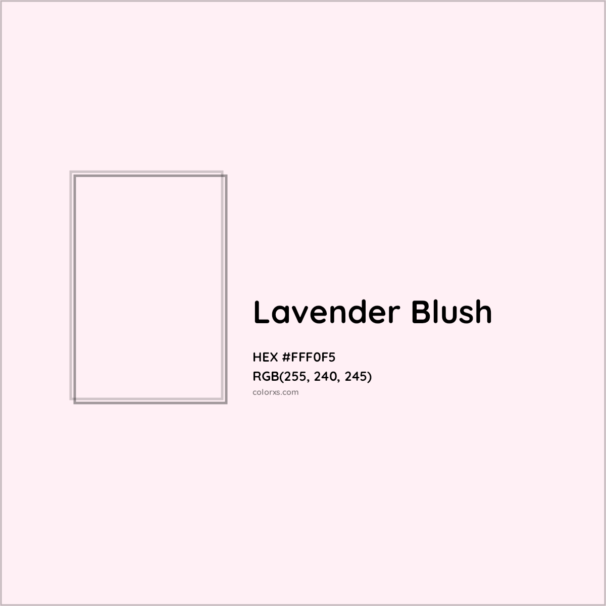
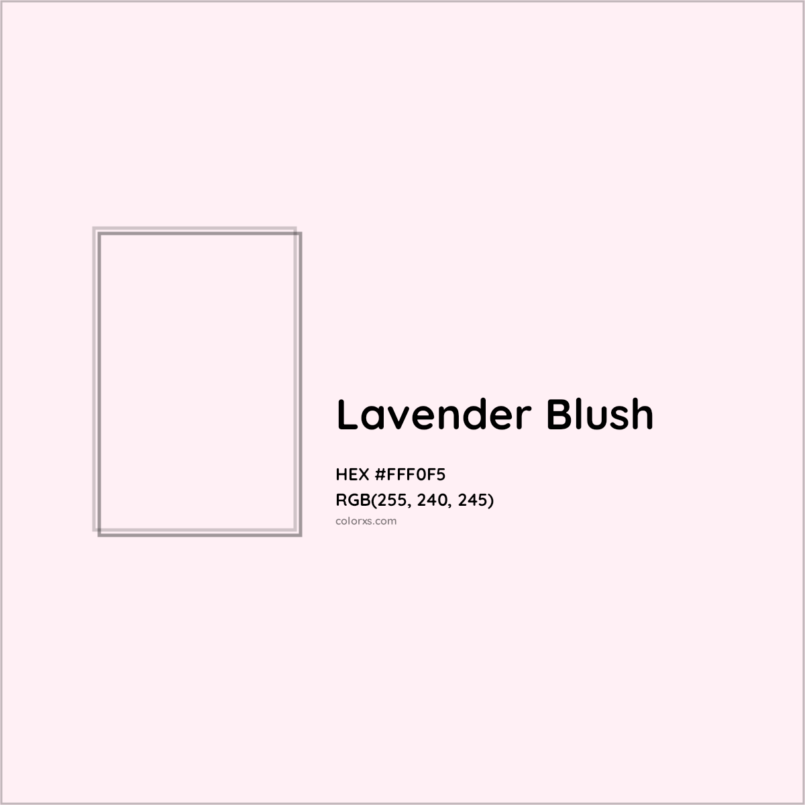

What is Lavender Blush?
Lavender Blush is a soft and gentle color that evokes feelings of tranquility and peace. It blends the calming properties of lavender with a blush of pink, making it a popular choice in design and fashion.
Lavender Blush is a soft and gentle color that evokes feelings of tranquility and peace. It blends the calming properties of lavender with a blush of pink, making it a popular choice in design and fashion.
